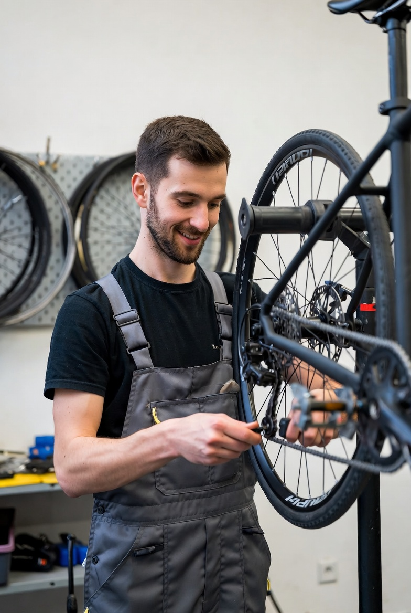

Perushuolloista sähköpyöriin - varaa aikaa niin korjataan pyöräsi kätevästi Joensuun sydämessä!
Tai pistäydy suoraan paikalle - tervetuloa!
Sesonkitiedotukset, muutokset aukioloaikoihin ja muut kuulumiset.
Ladataan...

Kaikki pienistä säädöistä suurempiin korjauksiin – Joensuun luotettava pyöräkorjaamo myös sähköpyörille.
Jarrut, vaihteisto, ketju. Nopea ja edullinen.
Kattava läpikäynti - suositellaan kerran vuodessa.
Akku, moottori, elektroniikka – sähköpyörän huolto Joensuussa.
Puhkeama tai vaihto usein saman päivän aikana.
Ketju, kaapeli, poljin, satula - kilpailukykyiseen hintaan.
Kerromme aina kustannuksen ennen työn aloittamista - polkupyörän huoltoarvio on aina ilmainen.
Varaosien hinnat veloitetaan erikseen. Työtuntihinta on 45 €/h. Pyydä arvio ennen työn aloittamista - se on ilmainen.
Keväisin (huhti-toukokuu) lauantait klo 10-16.
Kauppakatu 14
80100 Joensuu
Pielisen Pyörähuolto sijaitsee Joensuun kävelykeskustassa, muutaman minuutin kävelymatkan päässä torilta. Pyöräparkki pihan puolella.
Avaa kartallaPuh: +358 13 456 7890
Sähköposti:
huolto@pielisenpyora.fi
Voit varata ajan ajanvarausjärjestelmän kautta.
Varaa pyörähuoltoaika verkossa tai soita meille - sovitaan sopiva hetki.
Varaa aika!